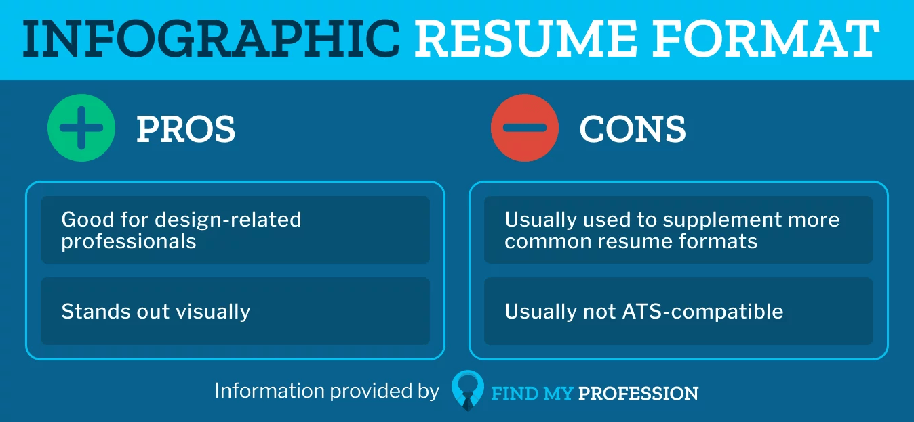

Your resume is your most powerful career marketing tool. Whether you're a fresh graduate writing your first resume, a seasoned professional updating your CV, or a career changer crafting a skills-based resume, knowing how to write a compelling resume is the single most important skill in any job search. A professionally written resume — optimized for both Applicant Tracking Systems (ATS) and human hiring managers — dramatically increases your chances of landing job interviews, getting callbacks, and ultimately securing your dream job.
In this comprehensive 2025 resume guide, you'll learn how to choose the right resume format, write a powerful professional summary, quantify your achievements, pass ATS screening, and tailor your resume for every job application. Whether you need a chronological resume, a functional resume, or a hybrid combination resume — this guide covers it all.
⭐ Key Stat: Studies show that recruiters spend an average of just 6–7 seconds scanning a resume before deciding whether to read further. Make those seconds count with a well-structured, keyword-rich, results-driven resume.
Step 1: Choose the Right Resume Format
One of the most critical — and most overlooked — resume writing decisions is choosing the right format. Your resume format should align with your career history, industry, and specific job goals. There are three primary resume formats used by professional resume writers and career coaches in 2025:

1.1 Reverse-Chronological Resume Format (Most Popular)
Best for: Professionals with a steady career progression, no major employment gaps, and experience in the same field.
The reverse-chronological resume is the gold standard — and the most preferred format among recruiters, hiring managers, and ATS software. It lists your work experience starting with your most recent position and working backward. This format clearly showcases career growth and is easy to scan quickly.
- Clearly demonstrates career growth and progression
- Highly ATS-friendly and recruiter-preferred
- Works best for those with 2+ years of relevant experience in the same field
- Ideal for professionals re-entering the workforce in their original field
1.2 Functional Resume Format (Skills-Based)
Best for: Career changers, recent graduates with limited work experience, or candidates with employment gaps.
The functional resume format, also called a skills-based resume, puts the spotlight on your transferable skills and core competencies rather than a chronological job history. It is a powerful tool for those transitioning industries or re-entering the job market after a career gap (such as parental leave, illness, or caregiving).
- De-emphasizes employment gaps and non-linear career paths
- Highlights transferable skills and core competencies prominently
- Can sometimes trigger ATS screening issues — use with caution and always include work history
1.3 Combination (Hybrid) Resume Format
Best for: Mid-to-senior career professionals, career changers with strong relevant skills, and those in creative or technical fields.
The combination resume — also called a hybrid resume — merges the best elements of both formats. It opens with a powerful skills summary or core competencies section, then follows with a reverse-chronological work history. This approach lets you spotlight what you do best while still satisfying ATS requirements and recruiter expectations.
- Showcases skills and experience equally
- Great for professionals with diverse but relevant experience
- Highly effective for senior-level roles, executive resumes, and technical positions
💡 Pro Tip: When in doubt, choose the reverse-chronological format. It's universally accepted across industries, ATS-compatible, and the format most recruiters prefer to read. You can always customize within that structure.
Step 2: Write a Powerful Professional Summary
The resume summary (also called a professional summary statement, career summary, or resume objective) is the first thing a recruiter reads. It's your 2–4 sentence elevator pitch — and it can make or break your chances of advancing to the interview stage.
A strong resume summary should include:
- Your professional title and years of experience
- 2–3 top skills or areas of expertise highly relevant to the target role
- One or two standout, quantifiable career accomplishments
- A value statement aligned with the employer's specific needs
Resume Summary Example (Before vs. After)
❌ Weak: "Experienced marketing professional looking for a challenging role to use my skills."
✅ Strong: "Results-driven Digital Marketing Manager with 8+ years of experience driving revenue growth through data-driven campaigns. Increased organic traffic by 120% at XYZ Corp via strategic SEO and content marketing initiatives. Expert in Google Ads, HubSpot, and marketing automation. Seeking to leverage proven digital growth strategies to scale brand awareness at [Target Company]."
🎯 SEO Tip: Use keywords from the job description directly in your resume summary. ATS systems and recruiters scan for these terms. If the job posting says "project management" and "stakeholder communication," those exact phrases should appear in your summary.
Step 3: Showcase Work Experience with Action Verbs and Quantified Results
The work experience section is the heart of your resume — and where most job seekers dramatically undersell themselves. Listing job duties is not enough. Hiring managers and recruiters want to see what you actually achieved, not just what you were responsible for.
Use Strong Resume Action Verbs
Every bullet point in your experience section should start with a powerful, industry-appropriate action verb. Action verbs make your resume more dynamic, readable, and persuasive. They signal initiative, ownership, and impact.
Leadership & Management
Directed, Spearheaded, Orchestrated, Championed, Transformed
Data & Analysis
Analyzed, Optimized, Forecasted, Identified, Evaluated
Sales & Growth
Generated, Drove, Accelerated, Surpassed, Expanded
Communication
Presented, Negotiated, Collaborated, Facilitated, Authored
Technical & Engineering
Architected, Engineered, Developed, Deployed, Automated
Quantify Every Achievement You Can
Numbers make your resume memorable and credible. Wherever possible, replace vague language with specific, measurable results. Quantified achievements are 40% more likely to capture a recruiter's attention according to career research studies.
❌ Before: "Responsible for managing social media accounts."
✅ After: "Grew Instagram following from 4,200 to 31,000 followers (+638%) in 12 months by executing a targeted content strategy, increasing brand awareness and driving a 35% lift in website traffic from social channels."
Use the simple CAR formula to structure each bullet point:
- C — Challenge: What was the problem or opportunity?
- A — Action: What specific steps did you take?
- R — Result: What was the measurable outcome?
📊 Quantify with Metrics Like: Revenue generated ($), percentage increase (%), time saved (hours/weeks), team size managed (#), cost reductions ($), customer satisfaction scores (NPS/CSAT), conversion rates (%), market share gained, projects delivered on time/budget.
Step 4: Build a Strategic Skills Section for ATS and Recruiters
A dedicated resume skills section is essential in 2025 — both for passing Applicant Tracking System (ATS) filters and for giving recruiters a fast snapshot of your core competencies. Your skills section bridges the gap between what employers need and what you offer.
Hard Skills vs. Soft Skills: What to Include
Hard skills (also called technical skills) are job-specific, teachable abilities that can be measured. Examples include:
- Programming languages (Python, Java, SQL, JavaScript)
- Software proficiency (Salesforce CRM, Adobe Creative Suite, Microsoft Excel, SAP)
- Industry certifications (PMP, AWS Certified, Google Analytics, Six Sigma)
- Data analysis & visualization (Power BI, Tableau, R)
Soft skills (interpersonal or transferable skills) demonstrate how you work and communicate. High-value soft skills for 2025 include:
- Leadership and team management
- Cross-functional collaboration and stakeholder communication
- Critical thinking and problem-solving
- Emotional intelligence and adaptability
- Project management and time management
🤖 ATS Optimization Tip: Mirror the exact language used in the job description. If the posting says "cross-functional collaboration," use that phrase — not just "teamwork." ATS software often scans for exact keyword matches, and small differences in phrasing can mean your resume never reaches a human reader.
Step 5: List Your Education and Professional Certifications
Your education section may seem straightforward, but how you present it can significantly affect your resume's performance — especially for recent graduates or candidates in highly credentialed fields like healthcare, law, finance, or engineering.
What to Include in Your Education Section
- Degree name and major (e.g., Bachelor of Science in Computer Science)
- University or college name and location (city, state)
- Graduation year (omit if more than 15 years ago to avoid age bias)
- GPA (if above 3.5 and you graduated within the last 3–5 years)
- Relevant coursework, honors, academic awards, or Dean's List recognition
- Study abroad programs or notable academic projects
High-Value Certifications and Licenses to Feature in 2025
Professional certifications can be as impactful as a degree — sometimes more so in fast-moving fields. Highlight certifications prominently when they're directly relevant to your target role:
- Technology & IT: AWS Solutions Architect, Google Cloud Professional, CompTIA Security+, PMP
- Marketing & Digital: Google Ads Certification, HubSpot Content Marketing, Meta Blueprint, Hootsuite Social Marketing
- Finance & Business: CPA, CFA, CMA, Six Sigma Green/Black Belt, Series 7/63
- Healthcare: RN, CCRN, LEAN Healthcare, Medical Coding (CPC, CCS)
- Human Resources: PHR, SPHR, SHRM-CP, SHRM-SCP
📚 Pro Tip: List certifications in a separate "Certifications & Professional Development" section for maximum visibility, especially if you hold multiple credentials. Include the issuing organization, certification name, and the year obtained (or expiry date if applicable).
Step 6: Optimize for ATS (Applicant Tracking Systems)
Over 90% of Fortune 500 companies and most mid-sized employers now use Applicant Tracking System (ATS) software to screen and rank resumes before a human ever sees them. If your resume isn't ATS-optimized, it may be automatically rejected — regardless of how qualified you are.
How ATS Resume Screening Works
ATS software scans your resume for keywords, phrases, and formatting patterns that match the job description. Resumes are then scored and ranked. Only the top-scoring resumes are forwarded to human recruiters for review.
Top ATS Optimization Strategies for 2025
- Use standard resume section headers (e.g., "Work Experience," "Education," "Skills") — avoid creative alternatives like "My Journey" or "Where I've Been"
- Incorporate exact keywords and phrases from the job description naturally throughout your resume
- Use a clean, single-column layout with standard fonts (Arial, Calibri, Times New Roman, Garamond)
- Avoid tables, text boxes, headers/footers, and graphics that ATS software may not parse correctly
- Save and submit your resume as a .docx or PDF file unless instructed otherwise
- Spell out abbreviations at least once (e.g., "Search Engine Optimization (SEO)") to capture both variations
- Avoid images, logos, or charts — ATS cannot read embedded images
🔑 Keyword Research Tip: Copy the job description into a free word cloud tool (like WordClouds.com) to quickly identify the most frequently used keywords. Prioritize incorporating those terms into your resume summary, skills section, and work experience bullets.
Step 7: Proofread Meticulously — Errors Kill Opportunities
A single typo or grammatical error on your resume can cost you an interview. In a 2024 CareerBuilder survey, 77% of hiring managers said they would immediately disqualify a candidate for typos or poor grammar on their resume. Proofreading is not optional — it's essential.
Your Resume Proofreading Checklist
- Proofread your resume at least three times on separate occasions with fresh eyes
- Read your resume aloud from bottom to top — this technique catches errors your brain glosses over when reading normally
- Use spell-check software (Grammarly, ProWritingAid, or Microsoft Editor) as a first pass, but never rely on it exclusively
- Check for consistent formatting: font sizes, bullet styles, date formats, and capitalization
- Verify that all employer names, job titles, dates, and locations are accurate and correctly spelled
- Confirm all contact information (email, phone, LinkedIn URL) is current and free of errors
- Ask a trusted colleague, a career coach, mentor, or professional resume reviewer to proofread
- Print a hard copy — errors that are invisible on screen often become obvious on paper
✏️ Common Resume Mistakes to Avoid: Inconsistent date formatting (mixing "Jan 2020" with "01/2020"), using first-person pronouns ("I," "my," "me"), including outdated or irrelevant experience, listing references on the resume itself, using a non-professional email address, and submitting a resume longer than 2 pages (unless you're a senior executive with 15+ years of experience).
Step 8: Tailor Your Resume for Every Single Job Application
The number one resume mistake job seekers make — confirmed by recruiter surveys year after year — is submitting the same generic resume to every job. Tailoring your resume for each application is not just recommended; it is essential in the competitive 2025 job market.
How to Effectively Tailor Your Resume
- Read the entire job description carefully and highlight required skills, qualifications, and keywords
- Update your professional summary to directly address the specific role and company
- Reorder your bullet points to lead with accomplishments most relevant to the target position
- Add or emphasize skills that appear prominently in the job posting
- Research the company's values, culture, and recent news — then subtly align your language with their brand voice
- Use the company name and specific role title in your resume summary when possible
- Match your resume to the job posting's language — if they say "revenue optimization," use that exact phrase
Create a Master Resume as Your Foundation
The most efficient approach is to maintain a comprehensive Master Resume that lists every role, accomplishment, skill, and certification in your career history. From this master document, create a tailored version for each application by selecting and highlighting the most relevant content. This strategy saves time while ensuring every submission is targeted and optimized.
🎯 Tailoring Shortcut: Create a simple side-by-side comparison: paste the job description on the left and your resume content on the right. For each key requirement listed, verify you have a matching accomplishment or skill on your resume. If you don't, consider whether you can honestly add it.
Bonus: Additional Resume Sections That Boost Your Application
Depending on your industry, career stage, and the specific role, you may want to include one or more of these additional resume sections to further differentiate yourself from competing candidates:
- LinkedIn Profile & Portfolio Links: Include your LinkedIn URL, GitHub profile (for developers), Behance or Dribbble (for designers), or a personal website showcasing your work
- Volunteer Experience: Especially valuable for recent graduates, career changers, or roles where community involvement is valued
- Publications & Speaking Engagements: Critical for academic, thought leadership, or executive-level roles — list by most recent first
- Languages: Fluency in multiple languages is a significant competitive advantage — specify your proficiency level (e.g., Native, Fluent, Conversational, Basic)
- Awards & Honors: Industry awards, employee recognition, or academic honors — be specific about the criteria and prestige
- Professional Affiliations: Membership in industry associations (e.g., AMA, IEEE, PMI, SHRM) signals professional commitment and engagement
- Projects & Freelance Work: Especially powerful for tech, creative, and consulting roles — list outcomes and technologies used
Your Resume Is a Living Document — Keep It Current
Creating a compelling, ATS-optimized, results-driven resume is an investment in your career — and one that pays dividends every time you enter the job market. By following these proven resume writing steps, you'll have a professional document that effectively markets your unique skills, quantified accomplishments, and career value to recruiters and hiring managers in any industry.
Remember: your resume is not a static document. It is a dynamic, evolving career tool that should be updated regularly — whenever you complete a major project, earn a new certification, receive a promotion, or develop a significant new skill. Set a calendar reminder to review and refresh your resume every 6 months, even when you're not actively job searching.
Ready to take the next step? Put these strategies into action today and craft a resume that opens doors, wins interviews, and accelerates your career toward the opportunities you deserve.
---
Related Topics: how to write a resume | resume tips 2025 | resume writing guide | professional resume examples | ATS resume optimization | resume format | resume summary examples | action verbs for resume | resume keywords | job search tips | resume templates | career change resume | entry-level resume | executive resume | resume for college graduates | resume skills section | resume proofreading | tailoring your resume | functional resume | chronological resume | combination resume | how to get a job interview | resume writing services | best resume format | resume do's and don'ts